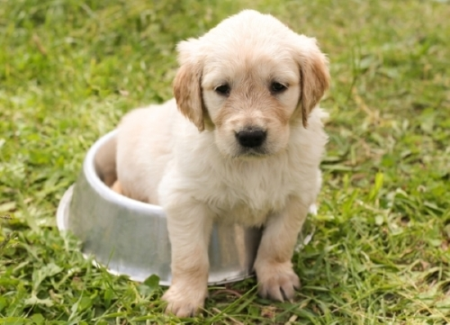

History: Durham House of Pets was founded in 1987 by Charles Kind, an avid animal lover. It has grown immensely since the early days. Kind sold his homemade dog treats and rope toys at a small booth until both growing popularity and demand provided him the means to open a shop. In 1990, D.H.O.P. started selling not only supplies for dogs, but cats and fish as well. Now in 2018, Durham House of Pets is the place to go for all your pet needs, including apparel, food, toys, habitats, and much more!
